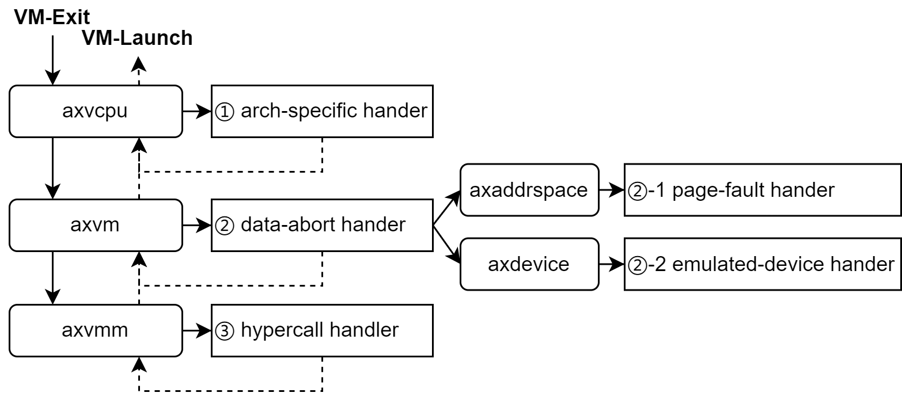

多层VM-Exit处理机制
众所周知，VM-Exit 对于获取客户虚拟机的运行状态以及与客户虚拟机进行交互至关重要。
VM-Exit 用于设备仿真和 vCPU 调度。
在 x86_64、aarch64 和 riscv64 架构中，VM-Exit 遵循相同的设计逻辑，但实现方式略有不同。

Inner-VCpu处理
在 x86_64 架构下，某些 VM-Exit 项目是特定于架构的（例如 VmxExitReason::CR_ACCESS、VmxExitReason::CPUID）。在我们当前的设计中，这些 VM-Exit 由 [VmxVcpu] 本身通过 builtin_vmexit_handler 处理，而其他 VM-Exit 类型则由 vcpu.run() 返回，并由调用 vcpu.run() 的程序来处理。
#![allow(unused)] fn main() { impl<H: AxVMHal> VmxVcpu<H> { /// Handle vm-exits than can and should be handled by [`VmxVcpu`] itself. /// /// Return the result or None if the vm-exit was not handled. fn builtin_vmexit_handler(&mut self, exit_info: &VmxExitInfo) -> Option<AxResult> { // Following vm-exits are handled here: // - interrupt window: turn off interrupt window; // - xsetbv: set guest xcr; // - cr access: just panic; match exit_info.exit_reason { VmxExitReason::INTERRUPT_WINDOW => Some(self.set_interrupt_window(false)), VmxExitReason::PREEMPTION_TIMER => Some(self.handle_vmx_preemption_timer()), VmxExitReason::XSETBV => Some(self.handle_xsetbv()), VmxExitReason::CR_ACCESS => Some(self.handle_cr()), VmxExitReason::CPUID => Some(self.handle_cpuid()), _ => None, } } } }
此外，VmxExitReason::IoRead/IoWrite 和 VmxExitReason::MsrRead/MsrWrite 也是 x86_64 特有的，但这些 VM-Exit 与端口 I/O 或 Msr 设备仿真相关，因此更适合在 vcpu.run() 之外处理。
Inner-VM处理
由于 axvm 中的虚拟机结构负责虚拟机的资源管理，例如模拟设备和地址空间（axaddrspace），所以更倾向于将与设备模拟相关的以及与页面错误相关的（数据中止）虚拟机退出保留在 axvm 内部。
也就是说，在虚拟机结构中提供一个 run_vcpu() 函数，并将与设备模拟相关的 VM 退出处理整合到 vm.run_vcpu()
#![allow(unused)] fn main() { impl<H: AxVMHal> AxVM<H> { pub fn run_vcpu(&self, vcpu_id: usize) -> AxResult<AxVCpuExitReason> { let vcpu = self .vcpu(vcpu_id) .ok_or_else(|| ax_err_type!(InvalidInput, "Invalid vcpu_id"))?; vcpu.bind()?; let exit_reason = loop { let exit_reason = vcpu.run()?; trace!("{exit_reason:#x?}"); let handled = match &exit_reason { AxVCpuExitReason::MmioRead { addr: _, width: _ } => true, AxVCpuExitReason::MmioWrite { addr: _, width: _, data: _, } => true, AxVCpuExitReason::IoRead { port: _, width: _ } => true, AxVCpuExitReason::IoWrite { port: _, width: _, data: _, } => true, AxVCpuExitReason::NestedPageFault { addr, access_flags } => self .inner_mut .address_space .lock() .handle_page_fault(*addr, *access_flags), _ => false, }; if !handled { break exit_reason; } }; vcpu.unbind()?; Ok(exit_reason) } } }
因此，将设备模拟操作整合到 axvm 模块中，这样 vmm-app 只需要传入配置文件就可以，然后根据需要创建模拟设备实例，而不必关心模拟设备的特定运行时行为以及地址空间。
当然，这是在这些 VM-exit 不触发 vCPU 调度的条件下。
(Outer-VM) vmm-app处理
我们重用 task 来实现 vcpu 的运行时管理和调度。
这个逻辑是在 vmm-app 中实现的，因为 VMM 自然需要关注 vCPU 调度，并且它在 vmm-app 中整合了对 ArceOS 的 axtask 的依赖。
对于前两层没有处理的 VM-Exit，它们将从 vcpu::run() 的返回值中获取，并在这里进行处理，包括处理 hypercalls（在 VMM 中处理这个似乎也相当合理）和任何需要 vcpu 调度或 vcpu 退出的 VM-Exit 类型。
#![allow(unused)] fn main() { let mut task = TaskInner::new( || { let curr = axtask::current(); let vm = curr.task_ext().vm.clone(); let vcpu = curr.task_ext().vcpu.clone(); let vm_id = vm.id(); let vcpu_id = vcpu.id(); info!("VM[{}] Vcpu[{}] waiting for running", vm.id(), vcpu.id()); wait_for(vm_id, || vm.running()); info!("VM[{}] Vcpu[{}] running...", vm.id(), vcpu.id()); loop { match vm.run_vcpu(vcpu_id) { // match vcpu.run() { Ok(exit_reason) => match exit_reason { AxVCpuExitReason::Hypercall { nr, args } => { debug!("Hypercall [{}] args {:x?}", nr, args); } AxVCpuExitReason::FailEntry { hardware_entry_failure_reason, } => { warn!( "VM[{}] VCpu[{}] run failed with exit code {}", vm_id, vcpu_id, hardware_entry_failure_reason ); } AxVCpuExitReason::ExternalInterrupt { vector } => { debug!("VM[{}] run VCpu[{}] get irq {}", vm_id, vcpu_id, vector); } AxVCpuExitReason::Halt => { debug!("VM[{}] run VCpu[{}] Halt", vm_id, vcpu_id); wait(vm_id) } AxVCpuExitReason::Nothing => {} _ => { warn!("Unhandled VM-Exit"); } }, Err(err) => { warn!("VM[{}] run VCpu[{}] get error {:?}", vm_id, vcpu_id, err); wait(vm_id) } } } }, format!("VCpu[{}]", vcpu.id()), KERNEL_STACK_SIZE, ); ```<style>.scroll-to-top { font-size: 2.5rem; width: 3.2rem; height: 3.2rem; display: none; align-items: center; justify-content: center; position: fixed; padding: 0.75rem; bottom: 4rem; right: calc(1.25rem + 90px + var(--page-padding)); z-index: 999; cursor: pointer; border: none; color: var(--bg); background: var(--fg); border-radius: 50%; } .scroll-to-top.hidden { display: none; } .scroll-to-top i { transform: translateY(-2px); } @media (min-width: 1080px) { .scroll-to-top { display: flex; } }</style><button type="button" aria-label="scroll-to-top" class="scroll-to-top hidden" onclick="scrollToTop()"> <i class="fa fa-angle-up"></i></button><script>const scrollToTop = () => window.scroll({ top: 0, behavior: "smooth" }); window.addEventListener("scroll", () => { const button = document.querySelector(".scroll-to-top"); button.classList.toggle("hidden", window.scrollY <200); });</script><style>.announcement-banner { --site-announcement-bar-stripe-color1: #e5e7eb; --site-announcement-bar-stripe-color2: #d1d5db; z-index: 150; position: relative; flex-direction: column; justify-content: center; align-items: center; margin: 0; padding: 1rem 3.5rem; background: repeating-linear-gradient( 45deg, var(--site-announcement-bar-stripe-color1), var(--site-announcement-bar-stripe-color1) 20px, var(--site-announcement-bar-stripe-color2) 10px, var(--site-announcement-bar-stripe-color2) 40px ); } html:is(.navy, .coal, .ayu) .announcement-banner { --site-announcement-bar-stripe-color1: #1f2937; --site-announcement-bar-stripe-color2: #111827; } .announcement-banner p { color: var(--fg); width: 100%; margin: 0; padding: 0; overflow: hidden; text-align: center; white-space: nowrap; text-overflow: ellipsis; text-wrap: balance; } .announcement-banner button[data-close] { top: 50%; right: 1rem; position: absolute; transform: translateY(-50%); width: 3rem; height: 3rem; cursor: pointer !important; border: none; font-weight: 900; border-radius: 50%; background-color: transparent; }</style><div style="display: none" data-id="0.2.11" class="announcement-banner"> <p><em>正在逐步完善中。。。</em></p> <button type="button" data-close>X</button></div><script>(() => { const banner = document.querySelector(".announcement-banner"); const id = banner.getAttribute("data-id"); const message = banner.querySelector("p").textContent; const localData = JSON.parse(localStorage.getItem("mdbook-announcement-banner")); if (!localData || localData.id !== id || localData.hide !== true) { banner.style.display = "flex"; const page = document.querySelector(".page"); page.parentNode.insertBefore(banner, page); banner.querySelector("button").addEventListener("click", () => { banner.remove(); localStorage.setItem("mdbook-announcement-banner", JSON.stringify({ id, hide: true, message })); }); } })();</script><style>.giscus { margin-top: 6rem; }</style><script src="https://giscus.app/client.js" data-repo="arceos-hypervisor/doc" data-repo-id="R_kgDOLMHfvQ" data-category="Comments" data-category-id="DIC_kwDOLMHfvc4CoqAB" data-mapping="title" data-strict="0" data-reactions-enabled="1" data-emit-metadata="0" data-input-position="bottom" data-lang="zh-CN" data-loading="eager" crossorigin="anonymous" data-theme="light" async></script><script>(() => { const giscusScript = document.querySelector("script[data-repo][data-repo-id]"); if (giscusScript?.getAttribute("data-theme") !== "book") return; const mapTheme = (theme) => (["light", "rust"].includes(theme) ? "light" : "dark"); const bookTheme = localStorage.getItem("mdbook-theme") || html.getAttribute("class"); giscusScript.setAttribute("data-theme", mapTheme(bookTheme)); document.querySelectorAll("button[role='menuitem'].theme").forEach((btn) => { btn.addEventListener("click", (event) => { const theme = mapTheme(event.target.id); const iframe = document.querySelector("iframe.giscus-frame"); if (iframe) iframe.contentWindow.postMessage({ giscus: { setConfig: { theme } } }, "*"); }); }); })();</script><style>footer { text-align: center; text-wrap: balance; margin-top: 5rem; display: flex; flex-direction: column; justify-content: center; align-items: center; } footer p { margin: 0; }</style><footer><p>Copyright © 2025 • Created by ArceOS Team</p></footer> }